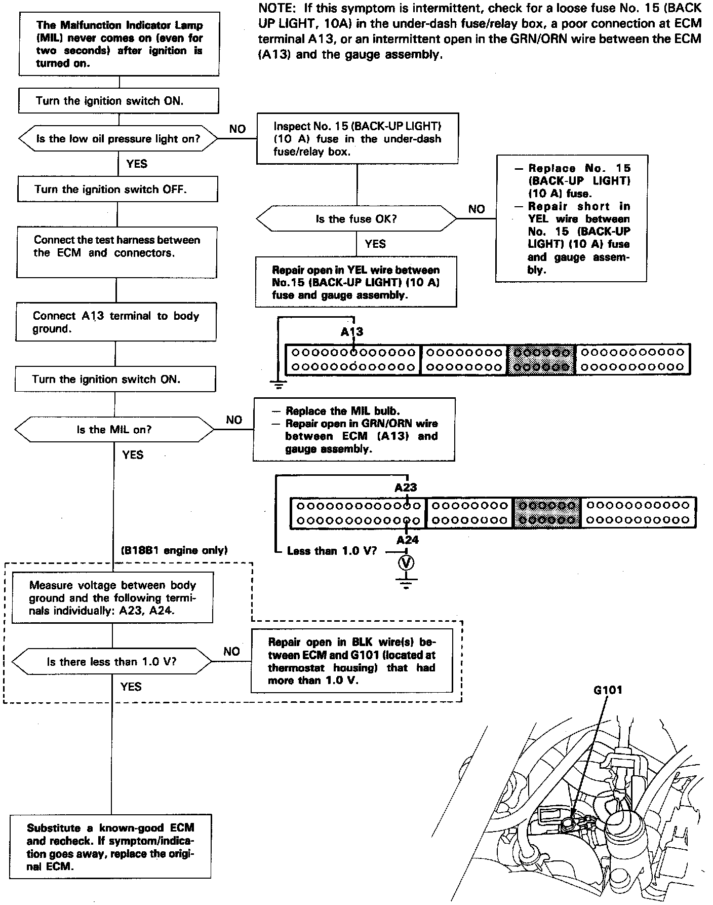

Operation CHARM
: Car repair manuals for everyone.
Home
>>
Acura
>>
1995
>>
Integra (GS-R) L4-1797cc 1.8L DOHC (VTEC)
>>
Repair and Diagnosis
>>
Powertrain Management
>>
Computers and Control Systems
>>
Testing and Inspection
>>
Symptom Related Diagnostic Procedures
>>
Symptom Diagnostic Procedures
>>
Malfunction Indicator Light (MIL) Never Comes ON
Malfunction Indicator Light (MIL) Never Comes ON
MIL Does Not Come On:
